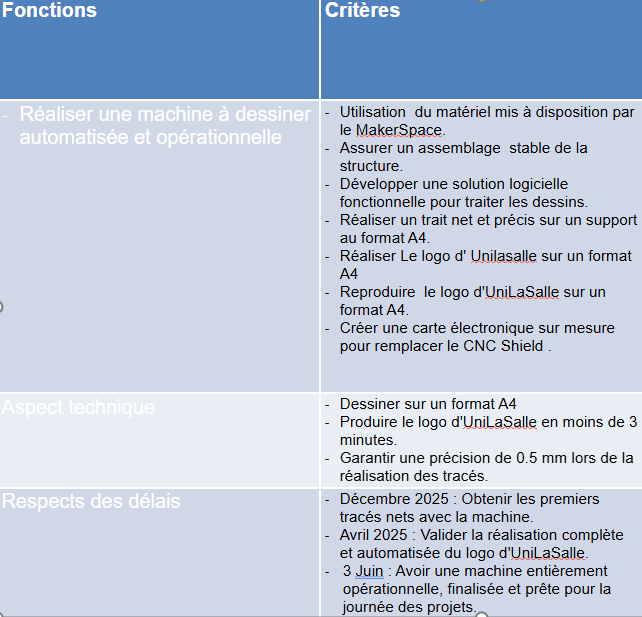

Introduction
Introduction
Le projet "Machines That Draw" est un défi de conception concret étalé sur deux semestres au MakerSpace d'UniLaSalle Amiens. L'objectif est de partir d'une page blanche pour imaginer, modéliser et fabriquer une machine à dessiner automatisée. Plus qu'un simple exercice académique, cette démarche nous plonge dans une mise en situation réelle où nous devons transformer une idée en un prototype fonctionnel et performant. Ce projet s'inspire directement de systèmes existants comme l'Axidraw ou d'autres dispositifs open-source reconnus. Cette expérience nous permet d'aborder de manière créative et transverse les trois piliers fondamentaux de la robotique et de l'ingénierie : la mécanique, l'électronique et la programmation. L'intérêt principal de ce projet réside dans son approche globale. Nous apprenons à gérer un système technique complexe dans son ensemble, depuis le choix des composants jusqu'à la chaîne logicielle qui convertit un dessin numérique en mouvements physiques. Le cadre du MakerSpace nous offre un environnement d'apprentissage par l'action. Sans plans préexistants, nous devons faire preuve d'autonomie et adopter une véritable méthodologie de recherche et développement. Face aux contraintes techniques et matérielles, chaque décision a nécessité une phase de réflexion collective, de prototypage rapide et de tests itératifs pour surmonter les imprévus. C'est cette liberté de conception, associée à la rigueur de la fabrication, qui fait la richesse de ce projet d'ingénierie.
Organisation de l'équipe
Nous avons organisé l'équipe (Mécanique, Électrique, Code). Chaque membre s'est vu confier une partie spécifique en fonction de ses compétences mais aussi en fonction de ses centres d'intérêt.
Mathis & Maxence
Développement de la carte électronique via KiCad, paramétrage des moteurs pas à pas, réalisation du PCB et soutage de la carte.
Raphaël & Thomas
Modélisation des pièces sur Onshape, impression 3D et montage structurel.
Thomas, Landry & Maxence
Développement du code de pilotage et de conversion d'images en G-code.
Cahier des charges
L'objectif de ce projet est de concevoir une machine à dessin entièrement automatisée à partir d'un châssis de 38,5 cm sur 39,5 cm. Nous avons fait le choix stratégique d'une architecture XY à courroies élastiques. Ce système cartésien nous permet d'assurer un tracé net et régulier, tout en adaptant la complexité mécanique aux compétences et à la passion de notre équipe.
Le projet, débuté le 20 novembre 2025, doit être finalisé pour le 3 juin 2026. Notre groupe de 5 personnes a réparti le travail de manière équitable en fonction des filières et des intérêts de chacun. Pour la réalisation, nous exploitons les ressources matérielles du MakerSpace : une carte Arduino Nano, un CNC Shield avec drivers et moteurs pas-à-pas, un servomoteur, ainsi que la découpe laser et l'impression 3D pour la fabrication des pièces.
